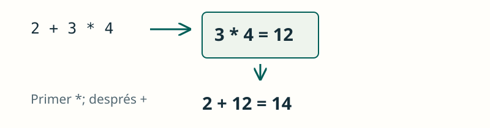

Operadors i expressions
JAVA / FONAMENTS
Operar amb dades
Els operadors transformen valors i permeten construir condicions.
Un operador actua sobre un o diversos valors, anomenats operands. El resultat es pot utilitzar en una altra operació o guardar en una variable.
Distingix assignació (=), comparació (==) i càlcul. Una expressió produïx un resultat d’un tipus concret.
int resto = 7 % 2; // 1
boolean mayor = 20 >= 18; // true
int total = (2 + 3) * 4; // 20
JAVA / FONAMENTS
Divisió entera
El tipus dels operands influïx en el resultat.
Java tria l’operació segons els tipus dels operands. Dividir dos enters descarta la part decimal: no arredonix a l’enter més pròxim.
Veure l’explicació
Els dos operands són enters: el quocient enter és 3. Amb 7 / 2.0 s’obté 3.5.
System.out.println(7 / 2);JAVA / FONAMENTS
Actualitzar una variable
Una assignació combinada utilitza el valor actual.
Primer es calcula el valor nou amb el contingut actual i després es guarda. Per a estos int, puntos += 2 equival a puntos = puntos + 2.
Veure l’explicació
puntos += 2 equival ací a puntos = puntos + 2: guarda 5.
int puntos = 3;
puntos += 2;
System.out.println(puntos);JAVA / FONAMENTS
Combinar condicions
Amb && s’han de complir les dos condicions.
Cada comparació produïx un booleà. Amb && exigim que es complisquen les dos condicions; amb || n’hi ha prou que se’n complisca una.
Veure l’explicació
edad >= 18 és false; per això la conjunció és false encara que tinga entrada.
int edad = 17;
boolean tieneEntrada = true;
System.out.println(edad >= 18 && tieneEntrada);JAVA / FONAMENTS
Prioritat i parèntesis
Els parèntesis canvien quina operació es fa primer.
La multiplicació té prioritat sobre la suma. Els parèntesis agrupen el que volem calcular abans i faciliten la lectura de l’expressió.
Veure l’explicació
Primer es calcula 2 + 3 = 5 i després 5 * 4 = 20.
System.out.println((2 + 3) * 4);PROVA I OBSERVA
La divisió depén del tipus
Canvia els operands i compara la divisió entera amb la decimal. Prova també un nombre negatiu o un divisor zero.
Compara el mateix càlcul amb un divisor int i amb un double. Els negatius permeten comprovar que la divisió entera trunca cap a zero.
Simulació didàctica de les operacions mostrades; no executa codi Java.